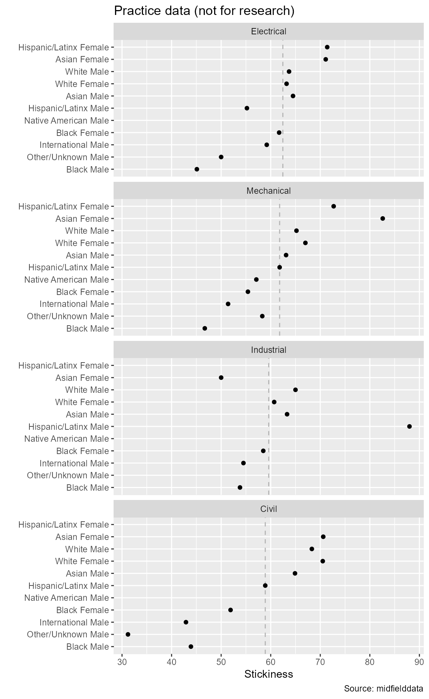
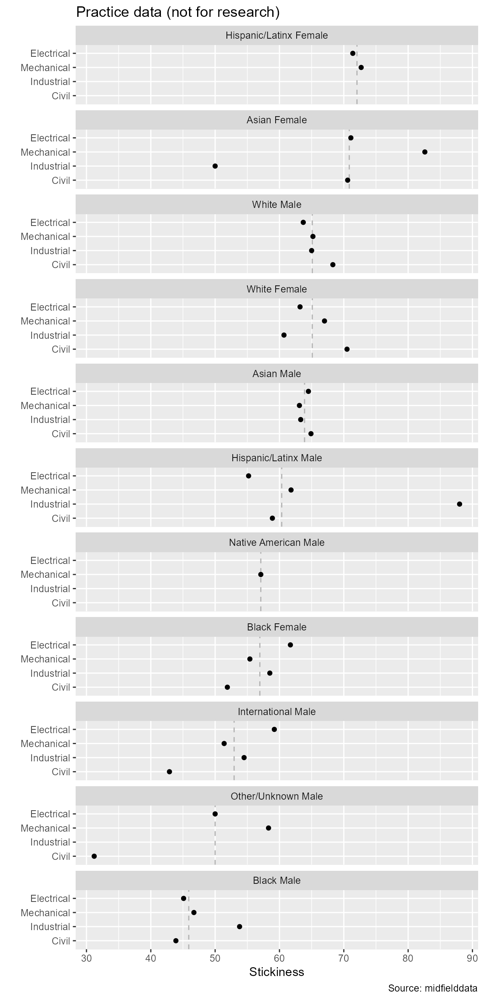
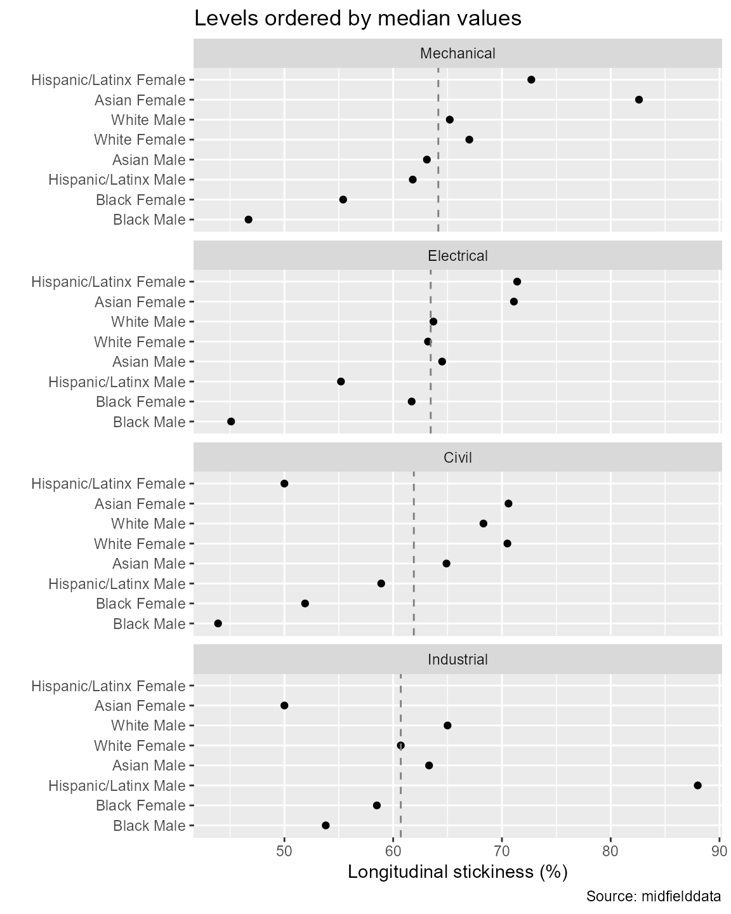
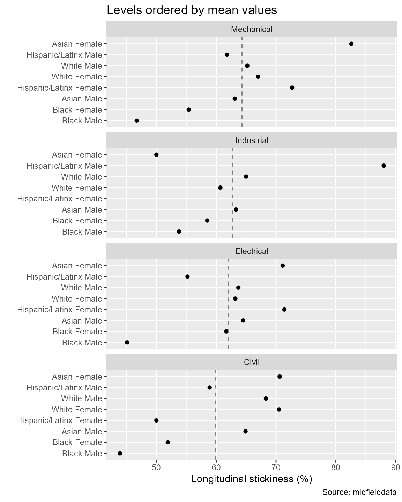
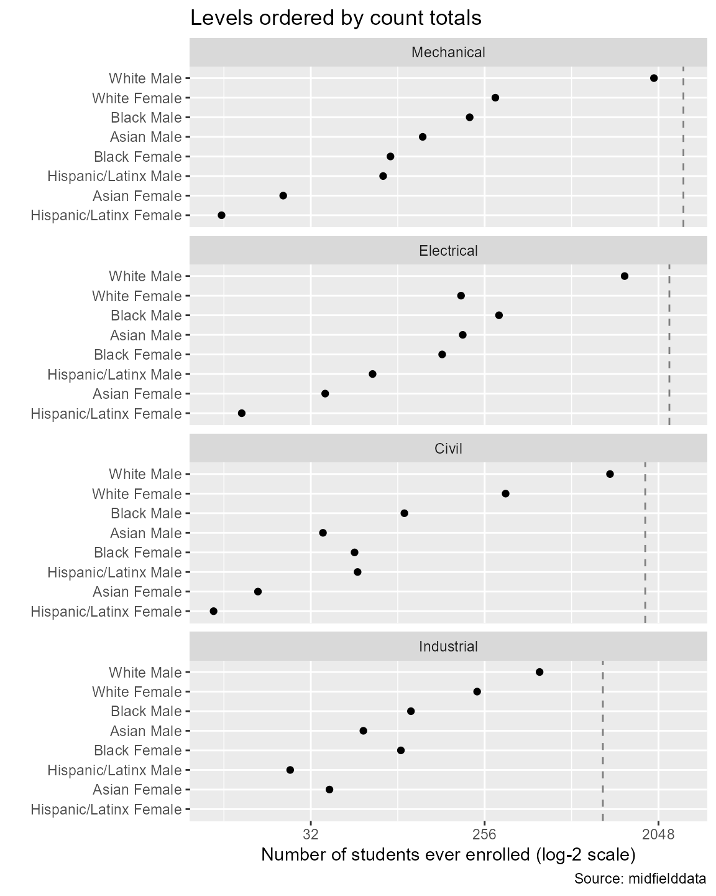
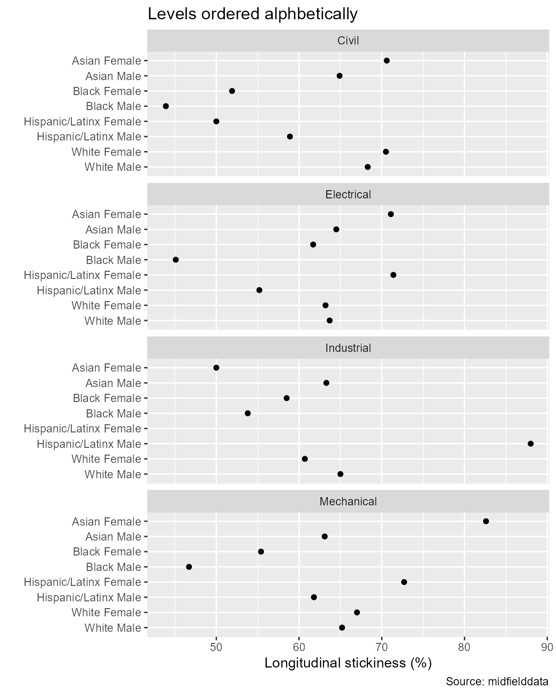

Multiway graphs
Richard Layton
2021-07-11
Source:vignettes/art-050-multiway-graphs.Rmd
art-050-multiway-graphs.RmdIntroduction
We introduce graphs of multiway data in which there is is one quantitative variable and two categorical variables. As explained by Cleveland [1],
… the quantitative variable is a response, and the goal is to study how it depends on the categorical variables, which are factors. What distinguishes multiway data is the cross-classification of the categorical variables; there is a value of the response for each combination of levels of the two categorical variables.
Multiway data have a specific structure: a categorical variable with \(m\) levels; an independent categorical variable with \(n\) levels; and a single quantitative value associated with every combinations of levels of the two categories. Multiway data are typically organized as three columns with \(m \times n\) rows.
Note that “multiway” in our context refers to the data structure and graph design defined by Cleveland, not to the methods of analysis described by Kroonenberg [2].
Outline
- Start with the case study stickiness results (
study_stickiness) - Practice conditioning multiway data for display
- Practice creating multiway graphs and their duals
- Practice different options for ordering rows and panels
In this vignette
midfieldr functions
packages
# packages used
library("midfieldr")
library("midfielddata")
library("data.table")
library("ggplot2")We can control how a data.table is printed to the screen with the following options.
# optional code to control data.table printing
options(
datatable.print.nrows = 10,
datatable.print.topn = 5,
datatable.print.class = TRUE
)Prepare data
Longitudinal “stickiness” is the ratio of the number of students graduating in a program to the number of students ever enrolled in that program [3]. The stickiness metric is developed in a separate vignette—here we focus on graphing a result.
We computed stickiness for a case study in Civil, Electrical, Industrial, and Mechanical Engineering and saved the results as the data set, study_stickiness. You may view its help page by running
? study_stickinessThe data is loaded with midfieldr (we don’t have to use data() to access it.)
# examine the built-in data
study_stickiness
#> program race_sex ever grad stick
#> <char> <char> <int> <int> <num>
#> 1: Civil Asian Female 17 12 70.6
#> 2: Civil Asian Male 37 24 64.9
#> 3: Civil Black Female 54 28 51.9
#> 4: Civil Black Male 98 43 43.9
#> 5: Civil Hispanic/Latinx Female 10 5 50.0
#> ---
#> 51: Mechanical Native American Male 14 8 57.1
#> 52: Mechanical Other/Unknown Female 8 7 87.5
#> 53: Mechanical Other/Unknown Male 48 28 58.3
#> 54: Mechanical White Female 291 195 67.0
#> 55: Mechanical White Male 1940 1265 65.2Categorical variables are often provided as character variables. Without ordering the levels, the rows and panels of the multiway graph are ordered alphabetically—not the best design for gaining insights from the graph.
To condition the categorical variables, we use condition_multiway() to convert them to factors with levels ordered by the quantitative response variable in some fashion, To see its help page, run
? condition_multiway()The function requires two categorical variables and one quantitative variable. In this data frame, the two categorical columns are program and race_sex. the quantitative variable is stick (for longitudinal stickiness). Before conditioning, the categorical variables are characters,
# create a new memory location
DT <- copy(study_stickiness)
# first category is a character
class(DT$program)
#> [1] "character"
# second category is a character
class(DT$race_sex)
#> [1] "character"We do some data conditioning before presenting the results. Even with students and institutions de-identified, privacy is at risk for small populations, so we omit observations with fewer than 10 students ever enrolled.
# Omit before graphing
DT <- DT[ever >= 10]We also omit rows with ambiguous values for race/ethnicity (International and Other/Unknown). Having graphed the results in advance, we find that the small population subset removed Native American students from all but one of the disciplines—so we add them to the list of observations to omit.
# data table printing option
options(datatable.print.topn = 3)
# Omit before graphing
DT <- DT[!race_sex %ilike% c("International|Other|Native")]
# Examine the result
DT
#> program race_sex ever grad stick
#> <char> <char> <int> <int> <num>
#> 1: Civil Asian Female 17 12 70.6
#> 2: Civil Asian Male 37 24 64.9
#> 3: Civil Black Female 54 28 51.9
#> ---
#> 29: Mechanical Hispanic/Latinx Male 76 47 61.8
#> 30: Mechanical White Female 291 195 67.0
#> 31: Mechanical White Male 1940 1265 65.2
temp <- copy(DT)We process the data frame
# condition as multiway data
DT <- condition_multiway(
dframe = DT, # input data frame
categ_col = c("program", "race_sex"), # multiway categorical variables
quant_col = "stick", # multiway quantitative variable
detail = FALSE, # do not return columns of details
order_by = "percent", # row and panel ordering method
param_col = c("grad", "ever") # parameters used for ordering
)No change to the row and column structure, but as you can see, the previous character variables have been converted to factors,
DT
#> program race_sex ever grad stick
#> <fctr> <fctr> <num> <num> <num>
#> 1: Civil Asian Female 17 12 70.6
#> 2: Civil Asian Male 37 24 64.9
#> 3: Civil Black Female 54 28 51.9
#> ---
#> 29: Mechanical Hispanic/Latinx Male 76 47 61.8
#> 30: Mechanical White Female 291 195 67.0
#> 31: Mechanical White Male 1940 1265 65.2The levels of the factors are ordered non-alphabetically. program is now a factor with 4 levels; race_sex is a factor with 8 levels.
# first category is now a factor
levels(DT$program)
#> [1] "Electrical" "Industrial" "Mechanical" "Civil"
# second category is now a factor
levels(DT$race_sex)
#> [1] "Black Male" "Black Female" "Hispanic/Latinx Male"
#> [4] "Asian Male" "White Male" "Hispanic/Latinx Female"
#> [7] "White Female" "Asian Female"The values that determine the order of the levels can be obtained by using the detail argument.
# return stickiness by category
DT <- condition_multiway(
dframe = DT, # input data frame
categ_col = c("program", "race_sex"), # multiway categorical variables
quant_col = "stick", # multiway quantitative variable
detail = TRUE, # return columns of details
order_by = "percent", # row and panel ordering method
param_col = c("grad", "ever") # parameters used for ordering
)By ordering the data by program, you can see that a given program has a single value of program_stick copied as many times as needed.
# optional code to control data.table printing
options(datatable.print.topn = 10)
# programs have a median stickiness across race-sex groups
DT[order(program)]
#> program race_sex grad ever stick program_grad
#> <fctr> <fctr> <num> <num> <num> <num>
#> 1: Electrical Asian Female 27 38 71.1 1425
#> 2: Electrical Asian Male 127 197 64.5 1425
#> 3: Electrical Black Female 95 154 61.7 1425
#> 4: Electrical Black Male 137 304 45.1 1425
#> 5: Electrical Hispanic/Latinx Female 10 14 71.4 1425
#> 6: Electrical Hispanic/Latinx Male 37 67 55.2 1425
#> 7: Electrical White Female 122 193 63.2 1425
#> 8: Electrical White Male 870 1366 63.7 1425
#> 9: Industrial Asian Female 20 40 50.0 655
#> 10: Industrial Asian Male 38 60 63.3 655
#> ---
#> 22: Mechanical White Female 195 291 67.0 1757
#> 23: Mechanical White Male 1265 1940 65.2 1757
#> 24: Civil Asian Female 12 17 70.6 1160
#> 25: Civil Asian Male 24 37 64.9 1160
#> 26: Civil Black Female 28 54 51.9 1160
#> 27: Civil Black Male 43 98 43.9 1160
#> 28: Civil Hispanic/Latinx Female 5 10 50.0 1160
#> 29: Civil Hispanic/Latinx Male 33 56 58.9 1160
#> 30: Civil White Female 232 329 70.5 1160
#> 31: Civil White Male 783 1147 68.3 1160
#> program_ever race_sex_grad race_sex_ever program_stick race_sex_stick
#> <num> <num> <num> <num> <num>
#> 1: 2333 78 118 61.1 66.1
#> 2: 2333 266 416 61.1 63.9
#> 3: 2333 224 385 61.1 58.2
#> 4: 2333 337 722 61.1 46.7
#> 5: 2333 23 35 61.1 65.7
#> 6: 2333 139 224 61.1 62.1
#> 7: 2333 691 1047 61.1 66.0
#> 8: 2333 3239 4947 61.1 65.5
#> 9: 1053 78 118 62.2 66.1
#> 10: 1053 266 416 62.2 63.9
#> ---
#> 22: 2760 691 1047 63.7 66.0
#> 23: 2760 3239 4947 63.7 65.5
#> 24: 1748 78 118 66.4 66.1
#> 25: 1748 266 416 66.4 63.9
#> 26: 1748 224 385 66.4 58.2
#> 27: 1748 337 722 66.4 46.7
#> 28: 1748 23 35 66.4 65.7
#> 29: 1748 139 224 66.4 62.1
#> 30: 1748 691 1047 66.4 66.0
#> 31: 1748 3239 4947 66.4 65.5Similarly, by ordering the data by race_sex, you can see that a given demographic group has a single value of race_sex_stick copied as many times as needed.
# race_sex groupings have a median stickiness across programs
DT[order(race_sex)]
#> program race_sex grad ever stick program_grad
#> <fctr> <fctr> <num> <num> <num> <num>
#> 1: Civil Black Male 43 98 43.9 1160
#> 2: Electrical Black Male 137 304 45.1 1425
#> 3: Industrial Black Male 57 106 53.8 655
#> 4: Mechanical Black Male 100 214 46.7 1757
#> 5: Civil Black Female 28 54 51.9 1160
#> 6: Electrical Black Female 95 154 61.7 1425
#> 7: Industrial Black Female 55 94 58.5 655
#> 8: Mechanical Black Female 46 83 55.4 1757
#> 9: Civil Hispanic/Latinx Male 33 56 58.9 1160
#> 10: Electrical Hispanic/Latinx Male 37 67 55.2 1425
#> ---
#> 22: Electrical Hispanic/Latinx Female 10 14 71.4 1425
#> 23: Mechanical Hispanic/Latinx Female 8 11 72.7 1757
#> 24: Civil White Female 232 329 70.5 1160
#> 25: Electrical White Female 122 193 63.2 1425
#> 26: Industrial White Female 142 234 60.7 655
#> 27: Mechanical White Female 195 291 67.0 1757
#> 28: Civil Asian Female 12 17 70.6 1160
#> 29: Electrical Asian Female 27 38 71.1 1425
#> 30: Industrial Asian Female 20 40 50.0 655
#> 31: Mechanical Asian Female 19 23 82.6 1757
#> program_ever race_sex_grad race_sex_ever program_stick race_sex_stick
#> <num> <num> <num> <num> <num>
#> 1: 1748 337 722 66.4 46.7
#> 2: 2333 337 722 61.1 46.7
#> 3: 1053 337 722 62.2 46.7
#> 4: 2760 337 722 63.7 46.7
#> 5: 1748 224 385 66.4 58.2
#> 6: 2333 224 385 61.1 58.2
#> 7: 1053 224 385 62.2 58.2
#> 8: 2760 224 385 63.7 58.2
#> 9: 1748 139 224 66.4 62.1
#> 10: 2333 139 224 61.1 62.1
#> ---
#> 22: 2333 23 35 61.1 65.7
#> 23: 2760 23 35 63.7 65.7
#> 24: 1748 691 1047 66.4 66.0
#> 25: 2333 691 1047 61.1 66.0
#> 26: 1053 691 1047 62.2 66.0
#> 27: 2760 691 1047 63.7 66.0
#> 28: 1748 78 118 66.4 66.1
#> 29: 2333 78 118 61.1 66.1
#> 30: 1053 78 118 62.2 66.1
#> 31: 2760 78 118 63.7 66.1Exercises
- Determine the class of the categorical variables in the built-in data set
study_grad_rate. - Apply
condition_multiway(). Confirm that the categorical variables are factors. - Determine the order of the factor levels.
Create a multiway graph
We use conventional ggplot2 functions to create the multiway graphs.
By previously ordering the levels of the factors, we have structured the data so that the rows and panels of the multiway graph are ordered by the method we selected. here we used the “percent” method. Program stickiness is drawn as a vertical reference line in each panel.
Reminder: These are practice data, not suitable for drawing inferences about student performance, i.e., not for research.
# create one multiway graph
ggplot(data = DT, aes(x = stick, y = race_sex)) +
facet_wrap(vars(program), ncol = 1, as.table = FALSE) +
geom_vline(aes(xintercept = program_stick),
linetype = 2,
color = "gray70"
) +
geom_point(na.rm = TRUE) +
labs(
x = "Stickiness (%)",
y = "",
title = "Practice data (not for research)",
caption = "Source: midfielddata"
)
This graph permits a direct visual comparison of how stickiness varies by race and sex within a particular major.
Reading a multiway graph
- We can more effectively compare values within a panel than between panels.
- Because rows are ordered, one expects a generally increasing trend within a panel. A response greater or smaller than expected creates a visual asymmetry. The interesting stories are often in these visual anomalies.
- To explore the comparison between panels, we swap the row and panel categories, creating the dual multiway.
Exercise
- Create a multiway graph using the conditioned
study_grad_ratedata
Create the dual multiway graph
The previous graph does not facilitate visual comparisons of members of the same race-sex group. As Cleveland says,
Because of this asymmetry, it is often important to explore multiway data by as many multiway dot plots as there are categorical variables, with each variable assigned once to the levels.
To create the dual multiway graph, we swap the roles of the rows and panels.
-
y = race_sexbecomesy = program -
facet_wrap(vars(program) ...becomesfacet_wrap(vars(race_sex) ...
# create the dual multiway graph
ggplot(data = DT, aes(x = stick, y = program)) +
facet_wrap(vars(race_sex), ncol = 1, as.table = FALSE) +
geom_vline(aes(xintercept = race_sex_stick),
linetype = 2,
color = "gray70"
) +
geom_point(na.rm = TRUE) +
labs(
x = "Stickiness (%)",
y = "",
title = "Practice data (not for research)",
caption = "Source: midfielddata"
)
This graph permits a direct visual comparison of how stickiness varies by major for one group of students. Race/ethnicity/sex group stickiness is drawn as a vertical reference line in each panel.
Both multiways should be created for discussion. Usually one or the other will convey a more compelling visual story that gets included in the published findings.
Exercise
- Create the dual multiway graph using the conditioned
study_grad_ratedata
Panel and row ordering options
The order_by argument in condition_multiway() provides options for ordering the two categorical variables (panel order and row order) in a multiway graph.
# create a common graph framework to use in the example below
p <- ggplot(data = temp, aes(x = stick, y = race_sex)) +
facet_wrap(vars(program), ncol = 1, as.table = FALSE) +
geom_point(na.rm = TRUE) +
labs(
x = "Longitudinal stickiness (%)",
y = "",
caption = "Source: midfielddata"
)The following values of order_by are possible:
- percent
- Orders by ratios computed by category. Used when the quantitative response variable is the ratio (in percent) of two columns of integer counts (the two columns are the numerator and denominator of the ratio), such as the ratio of graduates to ever-enrolled (stickiness) or the ratio of graduates to starters (graduation rate). The counts in the two columns are summed by category and ratios for that category are computed. These grouped ratios are used to order the levels of the categories.
-
The graphs shown above are representative of this type of ordering.
-
Requires the optional
param_colargument with the names of the columns of the two terms of the ratio. - median
- (default) Orders by the median of values in the quantitative column grouped by category. Here, the only quantity manipulated is the
dtf <- condition_multiway(
dframe = temp,
categ_col = c("program", "race_sex"),
quant_col = "stick",
detail = TRUE
)
p %+% dtf +
labs(title = "Levels ordered by median values") +
geom_vline(aes(xintercept = program_stick),
linetype = 2,
col = "gray50"
)
- mean
- Orders by the mean of values in the quantitative column grouped by category.
dtf <- condition_multiway(
dframe = temp,
categ_col = c("program", "race_sex"),
quant_col = "stick",
order_by = "mean",
detail = TRUE
)
p %+% dtf +
labs(title = "Levels ordered by mean values") +
geom_vline(aes(xintercept = program_stick),
linetype = 2,
col = "gray50"
)
- sum
- Orders by the sum of values in the quantitative column grouped by category. Useful when the response variable is a count or frequency.
dtf <- condition_multiway(
dframe = temp,
categ_col = c("program", "race_sex"),
quant_col = "ever",
order_by = "sum",
detail = TRUE
)
ggplot(data = dtf, aes(x = ever, y = race_sex)) +
facet_wrap(vars(program), ncol = 1, as.table = FALSE) +
geom_point(na.rm = TRUE) +
scale_x_continuous(trans = "log2") +
geom_vline(aes(xintercept = program_ever),
linetype = 2,
col = "gray50"
) +
labs(
x = "Number of students ever enrolled (log-2 scale)",
y = "",
title = "Levels ordered by count totals",
caption = "Source: midfielddata"
)
- alphabet
- Orders the levels of the categorical variables alphabetically. Rarely useful for perceiving effects, but can be useful for value look up.
dtf <- condition_multiway(
dframe = temp,
categ_col = c("program", "race_sex"),
quant_col = "stick",
order_by = "alphabet"
)
p %+% dtf +
labs(title = "Levels ordered alphbetically")
References
Appendix
Complete script
The vignette code chunks are collected below in a single, condensed script.
# packages used
library("midfieldr")
library("data.table")
library("ggplot2")
# optional code to control data.table printing
options(
datatable.print.nrows = 10,
datatable.print.topn = 5,
datatable.print.class = TRUE
)